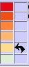

Bienvenue
dans l'assistant
Vous disposer de deux
modes d'utilisation :
- aide
contextuelle : placer le pointeur de la souris sur un objet
(bouton, menu, texte ou carte) et appuyer sur la touche majuscule
(shift).
- aide
par rubrique : choisissez vos sujets dans le sommaire ci-dessous.
Sommaire
Chapitre 1 -
Hypertexte
Commande de
l'affichage des cartes par hypertexte
(voir aussi §
Généralités)
 Sélectionner
un texte dans le menu.
Sélectionner
un texte dans le menu.
Une page
"hypertexte" s'affiche dans le cadre de gauche.
Cette page contient des
textes et des boutons liens qui commandent l'affichage des cartes et des
données.
(Cf. détail des boutons ci-dessous).
Un hypertexte peut comprendre plusieurs cartes. Chacune d'elles est
identifiée par un bouton rouge. Dans le texte qui suit un
bouton rouge vous trouverez des boutons de commande de l'affichage de
données dans cette carte.
Un nouveau bouton rouge indique une
nouvelle carte et les boutons situés en dessous affichent
les
données dans cette nouvelle carte, et ainsi de suite.
A l'ouverture
de la page hypertexte, la première carte est
sélectionnée automatiquement et s'affiche
directement.
Si
vous voulez revenir en arrière dans l'hypertexte,
sélectionnez la carte
que vous souhaitez activer avant de sélectionner les boutons
de données
associés à cette carte.
Donc, pour
lire et
activer l'hypertexte, il est préférable
de suivre l'ordre d'apparition des boutons.
Si vous sélectionnez un bouton de données sans
avoir sélectionné auparavant le bouton de carte
correspondant, un message s'affiche et vous invite
à attendre la fin de l'affichage automatique de la carte.
 Bouton carte
Bouton carte
 Bouton fond de carte
Bouton fond de carte
 Bouton icônes sur carte
Bouton icônes sur carte
Bouton fond + icône
 Bouton encadré
des graphiques de données
Bouton encadré
des graphiques de données
Chapitre 2 - Carte interactive
Animation et réglages
sur la carte
Déplacement
de la carte
Pour déplacer
la carte, cliquez sur n'importe quel endroit de la carte et
déplacez le pointeur de la souris en maintenant la
sélection active (mode Drag and Drop).
NB. Sélection des aires de la carte ou sélection de
l'arrière plan.
- si vous
cliquez sur une aire de la carte, cette aire sera
sélectionnée et cette sélection
déclenchera l'affichage d'un graphique
de données,
- si vous
sélectionnez l'arrière plan, cela annule la
sélection en cours sur la carte (sans toutefois masquer le graphique
s'il est affiché),
- pour faire
glisser la carte il est donc plus confortable de pointer la souris sur
l'arrière plan.
Attributs
visuels de la carte
La
carte comporte trois modes d'affichage de données qui
peuvent
être activés seuls ou simultanément :
- la coloration
du fond de carte (Cf. appliquer
au fond de carte et aussi module analyse),
- la projection
de figures (appelées ici icônes) ; cercles, triangle,
flèches, étoiles ... dont vous pouvez
gérer la dimension (Cf. ci-dessous) et la couleur (Cf. module analyse),
- l'affichage de
graphiques de données (histogrammes, courbes ...)
associés à chaque aire de la carte (Cf. graphiques de données).
Gestion
des icônes
:
 Augmente la
taille des icônes
Augmente la
taille des icônes
 Diminue la taille des icônes
Diminue la taille des icônes
NB. Dans le cas où un fond de carte coloré est
affiché seul (sans icône juxtaposée sur la
carte), lorsque vous activez les boutons ci-dessus, des cercles
apparaissent. Ils correspondent aux données
appliquées au fond de carte coloré. Cette
fonctionnalité permet de visualiser rapidement les grandeurs
relatives qui sont occultées par le regroupement en classes
de couleur dans le mode fond de carte.
Pour revenir au fond de carte seul, il suffit de cliquer sur le bouton "appliquer au fond de carte".
Bouton "opacité des icônes"
Permet d'opacifier les icônes pour une meilleure lecture en transparence.
- cliquez pour opacifier les icônes
- cliquez une seconde fois pour revenir à la présentation initiale
Bouton "effacer les icônes"

Efface les sélections de données affichées sur la carte.
Fonction
Zoom
- Zoom Plus
- Zoom Moins
- Retour à la taille initiale (zoom)
Chapitre
3 - Données
Animation
et réglages
sur la carte
Cependant, à coté de ce mode
préprogrammé, une part d'initiative est
laissée à l'utilisateur qui peut modifier les
modes d'affichage et les bornes des partitions en classes. (Cf. appliquer au fond de
carte et aussi Module
Analyse).
L'utilisateur peut aussi choisir les graphiques de données
associés aux aires géographiques de la carte au
moyen des menus de graphiques de
données.
Légendes

- pour afficher
les légendes : cliquez sur le bouton
- pour occulter
les légendes : survolez le bouton
Libellés
détaillés. Pour visualiser le
libellé détaillé de la
donnée : placez le pointeur de la souris au dessus de la
légende lorsqu'elle est affichée (le
libellé détaillé est
souvent nécessaire, car la place disponible dans la
légende ne suffit généralement pas
à fournir une information explicite sur la donnée).
Graphiques de
données
- pour afficher
les graphiques : cliquez sur le bouton et sélectionnez
une aire géographique
- pour occulter
les graphiques : survolez le bouton
Menus
des graphiques de données

Ces deux menus vous permettent de choisir les graphiques de
données que vous souhaitez afficher
(histogrammes, courbes ...).
Pour que les
graphiques s'affichent, il faut avoir sélectionné
une aire de la carte.
Cette présentation de données
permet :
- une analyse
des caractéristiques du territoires (en passant
d'un
graphique à l'autre sans changer de territoire)
- une analyse
comparée des territoires (en changeant les
territoires sans
changer les graphiques)
Bouton "appliquer les
paramètres des icônes au fond de carte"

ou
Bouton "appliquer fond"
Cliquez sur "appliquer fond".
Lorsque des icônes sont affichées sur la carte, vous pouvez
souhaiter visualiser ces mêmes données sous forme
de fond de carte coloré. Il vous suffit de cliquer sur ce
bouton. Si les icônes étaient juxtaposées sur un
fond de carte coloré, celui-ci est remplacé pour
le nouveau fond coloré et les icônes sont effacées. Pour revenir à la situation
initiale vous devez repasser par les boutons de l'hypertexte.
L'un des intérêts de cette fonctionnalité est que
le mode fond de carte est le plus
approprié pour une analyse de l'impact d'une
donnée sur les territoires au moyen de l'outil
de
variation dynamique des bornes de classes (Cf. Module
Analyse).
Bouton "opacité de la carte"

Permet d'opacifier le fond de carte pour une meilleure lecture des icônes juxtaposées.
- cliquez pour opacifier la carte
- cliquez une seconde fois pour revenir à la présentation initiale
Bouton "effacer la carte"

Efface les sélections de données affichées sur la carte.
Module
Analyse
Le module analyse est activé lorsqu'il y a au moins une donnée sur la carte.
Bouton analyse
- cliquez pour
afficher le module.
- survolez pour
refermer le module.
Lorsque le module se
referme, ou que l'on survole le bouton analyse, il
apparaît la Réglette de
réglage des bornes de classe.
Fonctionnalités du module analyse :
ce module présente la distribution de la donnée située sur la couche active.
- Couche active :
- (Lorsque seul le fond de carte est
appliqué, la couche active est le fond de carte. Lorsque les icônes sont appliquées avec ou sans fond de carte, la couche
active est celle des icônes).
Le module est prévu pour fonctionner
en mode bi varié (deux variables actives).
Le module présente la distribution de la donnée sous la
forme d'une droite dans un plan (x,y). C'est la raison pour laquelle la distribution
apparaît comme une droite en non pas sous la forme d'un nuage de
point comme ce serait le cas en mode bi varié.
Le plan (x,y) est divisé en colonnes et en lignes qui correspondent aux bornes des classes choisies pour la distribution.
Le module analyse vous permet d'intervenir directement sur la carte. Vous pouvez :
La réglette de
réglage des bornes de classe :
-
Cliquez
ici pour fermer la réglette.
La réglette de
réglage des bornes de classes vous permet de modifier
l'attribution des classes sur la carte de façon dynamique.
Cette fonctionnalité est particulièrement utile
pour observer de manière dynamique comment un
phénomène représenté par
une donnée affecte les territoires.
Il suffit pour cela de faire glisser les losanges
violets numérotés le long de la
réglette.
Pour faire glisser :
sélectionnez, engagez un léger mouvement et, tout en
continuant le mouvement, lâchez la sélection : le losange
suit alors les déplacements du pointeur de la souris. Pour
fixer la position, cliquez à l'endroit
désiré. (Essayez : c'est un coup
à prendre !)
NB. Lorsque vous opérez le glissement les autres losanges
disparaissent. Pour les faire réapparaître, survolez le
bouton analyse.
Cette fonctionnalité est
particulièrement dédiée à
la situation où :
Changer la palette de couleur
Cette fonctionnalité s'applique à la couche active.
 Changer les quantiles (Q2,Q3,Q4,Q5)
Changer les quantiles (Q2,Q3,Q4,Q5)
Effacer le contenu du tableau.
(les paramètres sont conservés : pour les appliquer à nouveau cliquez sur réactiver)
réactiver après avoir effacé.
 Attribuer
une couleur à une case du tableau.
Cette action entraîne automatiquement
l'affectation de la couleur aux aires de la carte contenues dans la
case du tableau.
Appliquez la configuration du tableau au fond de carte ou aux icônes.
Dans
le cas où les icônes sont affichées, vous pouvez choisir le mode
- ou taille
proportionnelle à la valeur de la donnée (représentation par grandeur
et classes à la fois)
- ou
 taille constante (représentation par classes
seulement)
taille constante (représentation par classes
seulement)
Enregistrer le fond de carte en cours
(L'enregistrement est temporaire. Il n'est pas conservé lorsqu'on change de carte).
Appliquer un fond de carte préalablement enregistré
Traçabilité des groupes appartenant à une classe
- marquer
(pour les tracer) les groupes appartenant à telle ou telle classe pour
voir si ces groupes sont conservés avec d'autres données
- effacer le marquage
Bouton "monovarié"
Chapitre 4 - Eléments de sémiologie
Généralités
Scénario
de rapprochement de données et hypertexte
Les
documents présentés
dans cette interface de publication de données
cartographiées sont
qualifiés d'hypertextes car ils comportent des fonctions
actives que ne
comportent pas les textes classiques. Ces fonctions sont bien des
liens, à l'instar des hypertextes que l'on trouve sur Internet et plus généralement en informatique et
qui renvoient à la
notion d'hypertexte comme ensemble de connaissances reliées
entre-elles
par un ou des shèmes. Mais les
hypertextes
présentés ici se
distinguent des hypertextes classiques sur deux
plans :
- l'hypertexte
est ici indissociable d'un second objet : la carte.
- cet
objet, dynamique et interactif, n'est
pas textuel au sens littéraire du terme.
Il recourre à un langage de figures graphiques.
Cependant
la carte n'en est pas moins un objet à lire, à
interpréter et à
commenter. De ce point de vue, comme un texte, son
interprétation
appelle des savoirs exogènes au texte lui-même
(ici la
connaissance de
la géographie, les représentations sociales sur
les
thèmes abordés ...). Mais ces savoirs
exogènes au
support lui-même et
à son contenu formel, ne
sont pas livrés aux seuls registres
d'interprétation des "lecteurs".
Ils sont articulés entre eux ou, tout au moins,
liés entre eux par un
schéma qui est précisément
l'architecture ou plutôt le scénario qui
organise la partie proprement textuelle de l'hypertexte. On parle ainsi
de mise en scène de données
et de scénarios de rapprochement de
données.
Une autre
particularité de ces hypertextes est qu'ils
laissent une part active au "lecteur". Celui-ci peut en effet modifier
les cartes, de manière simple (taille des icônes,
zoom) ou encore de manière plus
élaborée (via le module analyse (changer les
classes, faire varier les bornes comme des seuils,
colorimétrie hiérarchique ou
associative ...).
Cette
interface (i.e. ces hypertextes) sont en réalité la
part publiée des
résultats de processus de travail conduits en groupe, au
cours desquels
l'usage de la carte (en vidéo projection) a permis aux
participants de
mettre en commun des savoirs empiriques, scientifiques,
institutionnels ... et de discuter les représentations
activées par le
contenu des données, leur scénarisation.
Ce procédé de travail en groupe est au
coeur du projet Attlas de l'Anact. La
présente interface en est la
face visible à
l'extérieur des scènes de travail. Dans le projet
Attlas tels processus
de travail sont conduits, sous forme d'ateliers, dans trois types de
configurations qui peuvent se conjuguer entre elles :
- des
groupes de
professionnels de l'intervention dans les territoires ou les
entreprises (notamment au sein du réseau Anact)
- des
groupes d'acteurs sur un ou des territoires (partenaires
sociaux, collectivités, professionnels intervenants ...)
- des
acteurs de branches professionnelles (partenaires sociaux et leurs
partenaires)
Au
service des acteurs impliqués dans ces configurations, le
projet Attlas est
avant tout une démarche d'appui à
l'élaboration collective d'analyses
des situations territoriales à partir d'une
préoccupation donnée. En
l'occurrence, la relation âge, travail, emploi, territoire.
A
propos d'Attlas
Cadres,
partis pris, technologie mise en oeuvre et configuration requise
Cette interface de
publication est basée sur un noyau actif : l'interface
GaïaMundi de cartographie dynamique initialement
développée par Cité Publique
et augmentée dans le cadre d'un chantier de
R&D sociotechnique conduit par l'Anact. Ce chantier
de R&D s'inscrit dans le programme ATEON (Age Travail Emploi Observatoire National) mise en oeuvre par l'Anact
avec le soutien du FSE.
Engagé au printemps 2006, ce chantier de R&D Attlas
arrive
au printemps 2008, sur son volet technologique, au terme de sa phase de
production d'un démonstrateur. Le passage
à une phase dite d'industrialisation (i.e. de diffusion)
nécessite de finaliser le volet "socio"
de la R&D sociotechnique.
Cette finalisation est en cours à travers des
expérimentations en partenariat avec des branches
professionnelles, des acteurs engagés dans des dynamiques
territoriales, et à travers un cycle d'ateliers associant
non
seulement les acteurs des chantiers d'expérimentation, mais
des
professionnels et des chercheurs ou encore des institutions partenaires
de l'Anact.
L'interface GaïaMundi est basée sur une
technologie Web. Le parti pris
de base est celui d'une technologie client,
basée sur un standard
libre, stabilisé et évolutif (le
standard W3C). GaïaMundi est à
l'origine diffusé en licence libre GNU GPL,
ce qui rend le projet
compatible avec les financements européens, qui excluent toute
propriété
exclusive des réalisations et qui obligent à les
verser au domaine
public.
Outre
l'intérêt d'être un
outil multi plateforme et portable
(c'est-à-dire qu'il fonctionne sans serveur sur un
ordinateur
courant), ce parti pris d'une technologie client repose sur
une
évaluation stratégique des évolutions
technologiques sur Internet, en particulier sur le plan des
technologies au standard W3C libre qui présentent les
meilleures garanties de stabilité des versions au
fil des
évolutions, et qui sont en phase avec le parti pris de la
technologie client par les grands navigateurs conformes au W3C (
FireFox Mozilla, toute la génération geico et
plus
récemment Safari v3 pour Mac).
- le langage
utilisé dans le
projet Attlas (noyau GaïaMundi) est le Javascript DHTML et le
SVG
pour la carte, et le XML pour les architectures de méta
données
- le "back
office" (interfaces de saisie,
façonnage des données, etc.) mobilise
des
technologies serveur (php , ajax)
- l'administration
générale (permissions, sites
dédiés,
échanges de données) et les fonctions
collaboratives recourent aux modes Wiki (dans un premier
temps
une version originale du Wiki Waka) puis depuis 2008, le projet
s'inscrit progressivement dans l'univers technologique DocuWiki.
A l'origine du projet, il y avait un risque
d'isolement
technologique du côté de la technologie d'affichage
graphique.
La seule technologie de graphisme vectoriel libre et conforme
au
W3C est en effet le SVG qui était en 2006 peu
développé du fait de la concurrence du standard Flash
(bien que d'usage libre pour l'internaute, Flash est
néanmoins une technologie propriétaire,
qui, comme
on le voit aujourd'hui avec Apple, ne manque pas d'imposer des
contraintes de licences lorsque les produits ont un succès
industriel).
Aujourd'hui, non seulement certains sites institutionnels se sont mis
en conformité avec la réglementation
européenne et
ont dû adopter la technologie SVG pour être
compatibles
avec les financements européens (en particulier le site
d'EuroStat), mais Apple MacIntosh vient d'adopter la norme SVG comme
norme industrielle (sur Ipod notamment). Il résulte de ces
ajustements que les navigateurs vont maintenant optimiser le traitement
du SVG. Ces évolutions vont avoir pour effet que le monde
des
"développeurs libres" autant que le monde du
"breveté"
vont développer des bibliothèques de
fonctions
graphiques de qualité qui n'existent pas
aujourd'hui dans
cette technologie.
Déjà, après avoir
intégré le SVG
comme technologie par défaut (sans pluggin) dans sa version
FireFox2, dans sa la version FireFox3, l'interface de navigation de
Mozilla a permis de diviser par 6 le temps
d'exécution des fonctions de calcul et d'affichage de
GaïaMundi. Cette accélération devrait encore
être
plus spectaculaire avec FireFox 4 qui contiendra un
compilateur Javascript.
Ajouté à cela, le
développement du SVG au
niveau industriel devrait permettre d'atteindre bientôt des
performences proches de celles de la technologie Flash.